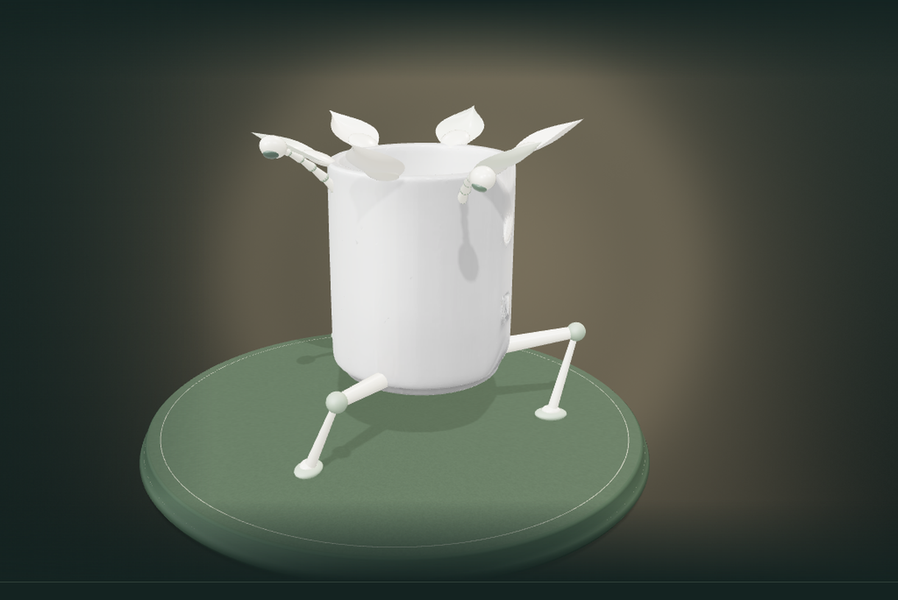
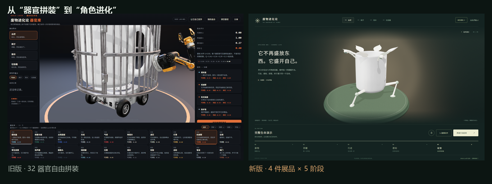
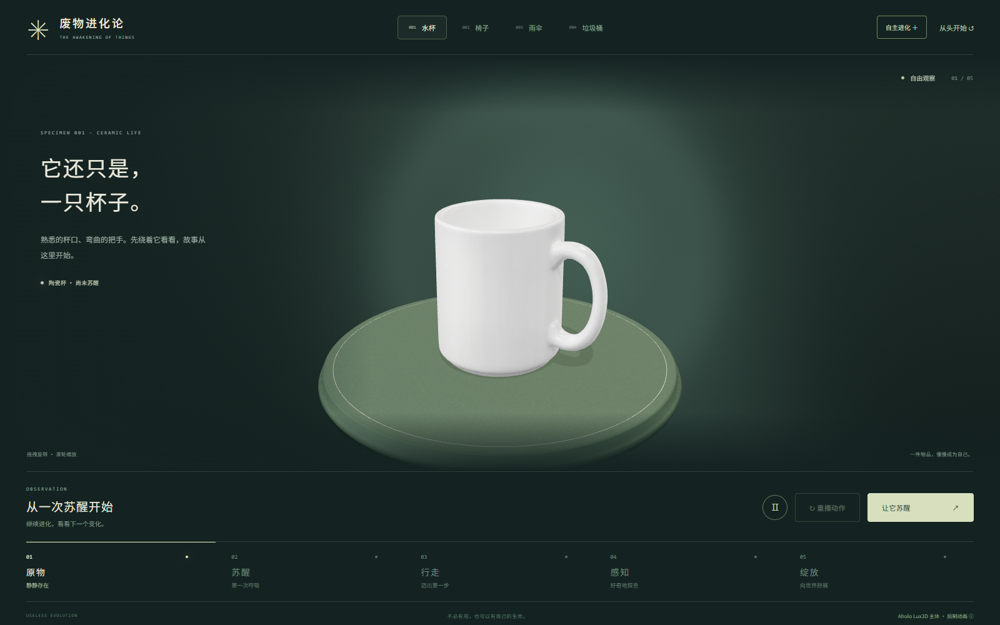
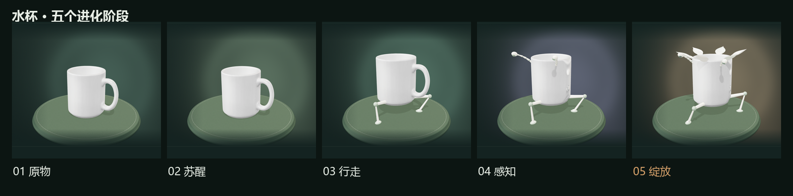
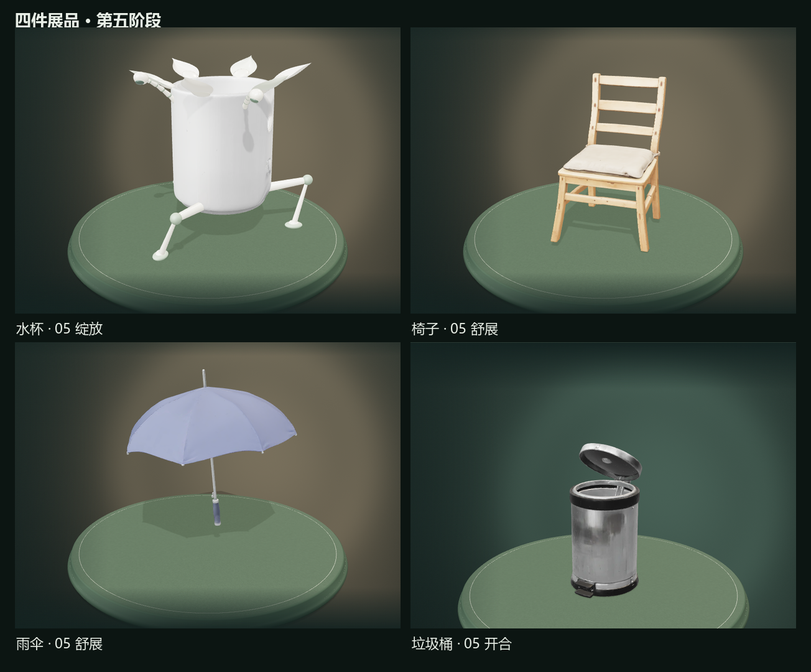
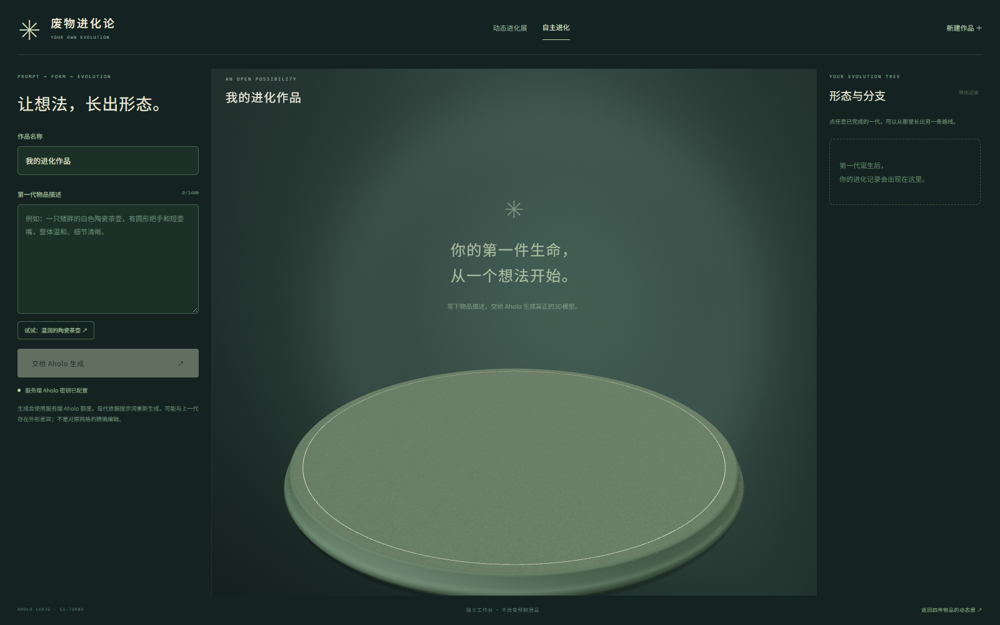

四件日常物品，五个进化阶段。以 Aholo Lux3D 生成的真实模型为主体，补充形态变化与动作，做一场“物自己醒来”的 3D 展。

《废物进化论 · 物的觉醒》把水杯、椅子、雨伞、垃圾桶四件日常物品放上同一个展台。每件物品有五个阶段：原物、苏醒、移动、感知、舒展。观众不需要打怪、抽卡或计算分数，只需要按下“让它苏醒”，看它怎样一点点偏离原来的用途。
四件主体都来自 Aholo Lux3D G1-Turbo 的真实生成结果，保留原始网格、UV 与纹理；运行时只加载本地 GLB，不调用模型接口。原始 GLB 没有骨骼和动画，页面里的关节、形变与动作由本作品后制：水杯使用真实杯身加程序化三足、双触角与六瓣冠；椅子、雨伞、垃圾桶则直接在真实网格上做分区顶点形变，不新增主体部件。页脚可以下载未经动画加工的原始 GLB，报告也把这条边界写清楚。
| 展品 | 它最后说的一句话 | 最终动作 |
|---|---|---|
| 水杯 | 它不再盛放东西。它盛开自己。 | 六瓣冠开合呼吸 |
| 椅子 | 它终于，能让自己放松。 | 四足舒展、椅背伸腰 |
| 雨伞 | 这一次，它为自己盛开。 | 浮游、感风、伞面舒展 |
| 垃圾桶 | 它也可以，主动迎接世界。 | 铰链开合、全身舒展 |
一只杯子被造出来，是为了盛水。如果它自己长出腿、触角和冠瓣，它还是杯子吗？我们想做的不是“更厉害的杯子”，而是让物在功能之外，长出一点自己的性格。
上一版《器官库》把 32 个 Lux3D 器官做成可自由拼装的系统：4 个基础物体、最多 4 个器官、跨物种融合、每 4.8 秒自主变异。它证明了“赛前建模、运行时拼装”的链路，但玩家面对的是组合与分数，物本身没有经历。
这一版把“组合”收起来，改成四条写好的进化路线。每件物品只有五个阶段，每个阶段只增加一种能力：先呼吸，再移动，再感知，最后舒展。观众不需要理解规则，也能看懂它正在变成什么。旧版的 32 个器官资产仍保留在仓库中作为归档，但不再进入新展台。
先让观众看见它“活着”，再让人意识到它原本是被使用的。标题写“它还只是，一只杯子”，而不是“杯子能做什么”。
杯子用三足交替落地，椅子用原有椅腿迈步，雨伞用伞沿感风，垃圾桶用桶盖开合。动作必须从原物的结构里长出来，不能四件共用一套动画。
原始 GLB 不带动画，页面明确写“主体 Lux3D · 后制动画”，并提供原始模型下载。哪些是生成的、哪些是后制的，不混在一起说。
没有血量、卡牌、分数和失败。唯一的“目标”是看完它五次变化；这使作品更接近展陈，而不是一局游戏。

单次文生 3D 是一次性网格，提示词即全部，每次生成都要等 2–6 分钟；本作品是四件展品 × 五阶段，模型在赛前生成、运行时零调用，可回看、可重播、可暂停。前者像抽一张卡，后者像看一场展。
一次完整体验约 3–6 分钟。首次进入默认是水杯；顶部四个标签切换物品，每件物品独立保存进度。底部时间轴可以直接回看任意阶段；回看会从当前形态平滑过渡到目标阶段，不是瞬间切换。

移动端在 390px 与 320px 宽度下重新排布：标题、展台、控制台、时间轴纵向排列，主要按钮保持可点；页面没有横向滚动。浏览器检查脚本覆盖了这些宽度。
观看提示：先看原物，再逐段唤醒；每段结束会自动演示，也可以随时暂停、回看或重播。
四件物品共用“原物 → 苏醒 → 移动 → 感知 → 舒展”的五段语法，但每一段的能力都从原物结构里长出来。下表是四条路线的完整设计。
| 展品 | 五个阶段 | 动作 | 最终形态 |
|---|---|---|---|
| 水杯 001 | 原物 / 苏醒 / 行走 / 感知 / 绽放 | 三足交替落地、双触角探查、六瓣冠开合 | 杯身保留，杯口长出六片陶瓷冠瓣，两侧长出双触角 |
| 椅子 002 | 原物 / 苏醒 / 迈步 / 探身 / 舒展 | 原有椅腿交替迈步、椅背转向、软垫呼吸 | 四足撑开，椅背向后舒展，仍是一把可辨认的木椅 |
| 雨伞 003 | 原物 / 苏醒 / 浮游 / 感风 / 舒展 | 伞面呼吸、整伞离地、伞沿波动、伞柄平衡 | 伞面舒展成更宽的轮廓，悬停在展台上方 |
| 垃圾桶 004 | 原物 / 苏醒 / 挪动 / 感知 / 开合 | 桶底左右承重、桶盖铰链开合、桶身收放 | 桶盖打开，桶身舒展，像在主动迎接外界 |

先“醒”（呼吸、轻微倾斜），再“动”（位移或抬升），再“感”（转向、倾听、感风），最后“开”（冠瓣、椅背、伞面、桶盖）。五个阶段对应五种逐渐增强的自主性。
杯子没有腿，所以用三足；椅子本来有四条腿，所以让原腿走路；雨伞没有脚，所以用浮游代替行走；垃圾桶有盖，所以把“开合”作为情绪表达。
| 阶段 | 新增能力 | 观众看到的变化 |
|---|---|---|
| 01 原物 | 无 | 熟悉的轮廓、材质与展台；先绕着它看 |
| 02 苏醒 | 呼吸、轻微倾斜 | 杯壁/软垫/伞面/桶壁开始起伏，像刚醒来 |
| 03 移动 | 腿、浮游或承重挪动 | 离开原位：三足落地、椅腿迈步、伞离地、桶挪动 |
| 04 感知 | 触角、转身、感风 | 停下、侧身、转向；它开始对周围有反应 |
| 05 舒展 | 冠瓣、椅背、伞面、桶盖 | 打开身体，完成一次“为自己”的动作 |

杯身是真实的 Lux3D 白瓷杯。三足、双触角、六瓣冠是后制程序化结构，用同一套白瓷材质与展台灯光贴合。它的动作最“像虫”：三足交替，触角先探路，冠瓣最后打开。
不新增任何部件，直接对真实木椅做分区顶点形变：四条腿按对角相位摆动，椅背向后仰，软垫跟着呼吸。它始终是一把椅子，只是第一次为自己迈步。
伞面、伞骨、伞柄都在真实网格上形变。伞面像肺一样收放，整把伞离地，伞沿逐片翻起；它没有脚，所以用“浮游”完成移动。
桶盖被识别为独立分区，沿铰链旋转；桶身左右承重挪动，像笨拙地走路。它用“开合”表达情绪：先试探，再打开，最后轻轻合拢。
Lux3D 在本项目里不是运行时魔法，而是“资产生产线”：赛前把四件主体生成好、压缩好、登记好；运行时只读本地文件。这样展台打开就能看，不用等 2–6 分钟的生成。
| 主体 | Lux3D 任务 | 生成时间（UTC） | 原始大小 | 优化后 | 保留率 |
|---|---|---|---|---|---|
| 水杯 | 4778822 | 2026-11-06 12:00 | 10.0 MB | 0.81 MB | 8.1% |
| 椅子 | 4779829 | 2026-11-06 12:11 | 10.7 MB | 0.97 MB | 9.0% |
| 雨伞 | 4780091 | 2026-11-06 12:14 | 13.4 MB | 1.23 MB | 9.1% |
| 垃圾桶 | 4780372 | 2026-11-06 12:18 | 15.2 MB | 1.47 MB | 9.7% |
四件主体原始合计约 49.3 MB，优化后约 4.5 MB，保留率约 9.1%，体积减少约 90.9%。优化使用 `gltf-transform optimize --texture-compress webp --texture-size 1024 --simplify false`，不简化拓扑，保留原始 UV 与纹理引用。
Object: one {object}, still recognizable as a {object}.
Inherited: {shape}, {material}.
Geometry: single connected object, full object visible,
centered on a plain light grey studio background,
soft studio lighting, no text, no logo, no people.
Style: coherent premium industrial 3D product design,
{material}, game-ready asset.
把实际提示词归纳成四段：`Object` 与 `Inherited` 锁住原物特征，`Geometry` 约束背景与完整性，`Style` 统一四件展品的材质语言。四件主体分别替换 `{object}` 与 `{material}`：白瓷杯、浅色橡木椅、浅蓝伞布、拉丝金属垃圾桶。
Lux3D 输出的是静态网格，没有骨骼、没有动画片段。我们没有假装它有，而是把“后制”拆成两层：一层是全局生长曲线，一层是每件物品自己的形变规则。
所有展品共享 `growthAt(age)`：`wake`、`legs`、`feelers`、`crown` 四条曲线分别在阶段 0–3 之后逐渐打开。阶段不是五张静态图，而是连续 age 上的插值；所以暂停时能停在任意中间态。
growthAt(age) = {
wake: smooth(age),
legs: smooth(age - 1),
feelers: smooth(age - 2),
crown: smooth(age - 3)
}
| 展品 | 后制方式 | 可见动作 | 是否新增主体网格 |
|---|---|---|---|
| 水杯 | 真实杯身 + 程序化三足、双触角、六瓣冠 | 三足交替落地、触角摆动、冠瓣开合、杯身呼吸 | 是（附件结构） |
| 椅子 | 真实网格上的分区顶点形变 | 椅腿对角摆动、椅背后仰、软垫呼吸 | 否 |
| 雨伞 | 真实网格上的分区顶点形变 | 伞面收放、整伞离地、伞沿波动、伞柄平衡 | 否 |
| 垃圾桶 | 真实网格上的铰链分区形变 | 桶盖开合、桶身左右承重、桶壁呼吸 | 否 |
杯子没有现成的腿，所以三足是后制的。每条腿是两段连杆：髋点固定在杯身底部，足端按 `footAt(t, i)` 沿身体路径落点，膝盖用两段 IK 求交。三足相位相差 120°，任意时刻至少两只脚在地面，形成稳定的三角支撑。
`scripts/living-check.ts` 验证了连续生长、三足接地、支撑脚不滑动、两段连杆长度精确；浏览器脚本还验证了五阶段、自动动作、真实暂停、重播、反向回看、重置与 390/320px 布局。
| 模式 | 触发 | 行为 |
|---|---|---|
| grow | 点击“让它苏醒 / 继续进化” | age 从当前阶段插值到目标阶段，显示生长进度；结束后自动进入 demo |
| demo | 生长完成，或点击“再看它动起来” | 7.5 秒完整动作：步态、开合、浮游、触角探查；结束后回到 idle |
| idle | 默认 / demo 结束 | 自由观察；拖拽旋转、滚轮缩放、点击模型重播 |
所有动作由 `clock.time`、`clock.travel`、`clock.demo` 驱动。暂停时 `clock.paused` 直接跳过 `useFrame` 更新，所以呼吸、步态、背景与阴影一起停住；这不是 CSS 动画的暂停。阴影使用自定义 `MeshDepthMaterial`，并同步顶点形变，否则形变后阴影会留在原地。
四件预制展品是“作品”，`?create=1` 是“工具”。观众可以输入自己的物品描述，让服务端调用 Aholo Lux3D 生成第一代，再沿着任意已完成的一代继续变异，形成一棵自己的形态树。

| 问题 | 处理 |
|---|---|
| API Key 泄露 | 只放在服务端 `.env`，浏览器请求 `/api/lux3d/generate`，响应不返回密钥。 |
| 重复提交 | 按提示词哈希去重；同一提示词已有任务/模型时直接复用。 |
| 刷新丢失 | 工作台状态存 `localStorage`；任务元数据存模型目录 `.jobs.json`，服务重启可恢复。 |
| 生成差异 | 明确提示“每一代是重新生成，不是对上一代网格做精确编辑”，外形继承可能有差异。 |
这一版的核心风险不是“画面不够炫”，而是“看起来在动，其实只是 CSS 动画”。所以测试重点放在：真实 GLB 是否被加载、动作是否由时钟驱动、暂停是否真的冻结、四件进度是否独立、移动端是否可用。
| 检查 | 命令 | 结果 |
|---|---|---|
| 杯子步态与生长 | npm run test:living | 连续生长、三足接地、支撑脚不滑动、两段连杆长度精确 |
| 四件资产与阶段 | npm run test:exhibits | 四个真实 Lux3D 资产、每件五阶段、独立进度、纹理/拓扑保留 |
| 浏览器主流程 | npm run test:living-ui | 五阶段、自动动作、真实暂停、重播、反向回看、重置、390/320px |
| 四件浏览器检查 | npm run test:exhibits-ui | 20 个阶段、四个 GLB 响应、真实运动、来源说明、切换取消、移动端 |
| 工作台逻辑 | npm run test:workshop | 提示词继承、真实分支、状态恢复、并发去重、轮询与缓存 |
| 工作台浏览器 | npm run test:workshop-ui | 异步等待、刷新续等、失败重试、分支、停止/恢复、导出、移动端 |
| 项目 | 结果 |
|---|---|
| 构建 | `tsc -b && vite build` 通过；JS 约 1.08 MB（gzip 306 KB），CSS 约 39 KB |
| 运行 | 单端口 8787 同时提供前端与 API；Windows 双击 `启动Demo.bat`，`停止Demo.bat` 释放端口 |
| 入口 | `/` 四展台；`?object=cup|chair|umbrella|bin` 直达；`?create=1` 工作台 |
| 移动端 | 390px / 320px 无横向滚动，主要按钮可点；3D 画布保持可旋转 |
npm install npm run build npm start # 打开 http://localhost:8787/ # 四件展品：/ ｜ 工作台：/?create=1 # 单件直达：/?object=cup|chair|umbrella|bin
Windows 也可以直接双击 `启动Demo.bat`：脚本会检查依赖、构建、启动 8787 并打开浏览器；`停止Demo.bat` 释放端口。首次启动若没有 `node_modules` 会自动安装。
Lux3D 单次生成约 2–6 分钟。展台的核心体验是“点一下，马上看到它变”，等待会打断观看。我们把生成放到赛前，运行时只加载本地 GLB；生成能力则放进可选的工作台，让愿意等待的观众自己用。
Lux3D 的 GLB 没有骨架，也没有分离的部件。强行绑定骨骼会破坏原始拓扑，且四件物品的结构差异很大。我们选择两条更可控的路：水杯在真实杯身外挂程序化附件；椅子、雨伞、垃圾桶直接在顶点着色器里做分区形变。前者能长出全新的腿和冠，后者能保证“还是原来的椅子/伞/桶”。
| 时间 | 版本 | 变化 |
|---|---|---|
| 11-06 | 四件 Lux3D 主体 | 生成水杯、椅子、雨伞、垃圾桶，保留 taskId 与原始 GLB |
| 11-10 | 旧版《器官库》 | 32 个器官、4 个基础、自由拼装、融合、自主变异；作为拓展保留 |
| 11-13 | 新版《物的觉醒》 | 收敛为四件展品 × 五阶段，加入真实动作、独立进度、工作台 |
| 11-14 | 演示视频 | 真实运行画面 + 阿里云通义万相片头/片尾，62 秒 |
| 11-15 | 报告与 QA | 真实页面截图、测试复跑、构建与提交材料核对 |
早期杯子是程序化几何，动作容易但不像真实产品。这一版换成真实白瓷杯 GLB，保留杯身与把手，再把三足、触角、冠瓣作为后制附件贴上去。
旧版自由度高，但观众不知道“下一步该看什么”。新版用五段时间轴把注意力收束到“它正在变成什么”，牺牲组合数量，换来叙事完整度。
| 级别 | 方向 | 理由 |
|---|---|---|
| P0 | 带分离部件的“可动资产” | 减少水杯三足/触角/冠瓣的后制量，让更多物品能直接长出关节 |
| P1 | 分享链接与现场投影 | 让观众把自己的进化树带到现场，放大“物自己醒来”的传播点 |
| P2 | 接触约束与地面检测 | 让步态对展台边缘、障碍物有反应，而不只是沿预设路径移动 |
| 现在的边界 | 下一步 |
|---|---|
| 形变是作者写好的分区规则，不是模型自己学会的动作 | 尝试自动骨骼/关节识别，让新生成的物品也能获得可动结构 |
| 水杯的三足、触角、冠瓣是后制程序化网格，不是 Lux3D 生成 | 探索用 Lux3D 直接生成带分离部件的“可动资产”，减少后制 |
| 没有物理碰撞与真实步态规划，脚会沿预设路径移动 | 加入简单接触约束与地面检测，让步态对展台边缘有反应 |
| 工作台每一代是重新生成，外形继承不保证连续 | 研究参考图/首尾帧约束，让分支之间的形态更连贯 |
| 目前是单机展陈，没有多人同时观看与投票 | 增加分享链接与现场投影模式，让观众把自己的进化树投到展台上 |
| 项目 | 内容 |
|---|---|
| Demo | 【部署后填写，保留至 2026-12-31】；本地 `http://127.0.0.1:8787/` |
| 运行 | Windows 双击 `启动Demo.bat`（构建 → 启动 8787 → 打开浏览器）；`停止Demo.bat` 释放端口 |
| 主入口 | `/` 四展台；`?object=cup|chair|umbrella|bin`；`?create=1` 自主进化工作台 |
| 材料 | 本报告、路演 PPT、62 秒演示视频、提交文案、源代码 zip |
| 模型 | Aholo Lux3D G1-Turbo；四个 taskId 见 04 节；原始 GLB 可在页脚下载 |
| 视频 | 真实运行画面 + 阿里云通义万相 `wan3.0-video` 片头/片尾；AI 片段不替代真实操作 |
四件主体模型由 Aholo Lux3D 生成；关节、形态变化与动作由本作品后制，原始模型不自带动画。演示视频中的片头/片尾由阿里云通义万相生成，核心操作段落为本机真实运行录屏。报告中的页面截图均为 2026-11-15 真实运行截取，未使用效果图冒充运行画面。API Key 仅保存在服务端，未进入任何提交材料。
【姓名 / 团队】
【分工：概念 / 3D / 前端 / 视频】
【邮箱 / 社群昵称】
小红书：【发布后填写，带 #Aholo黑客松】